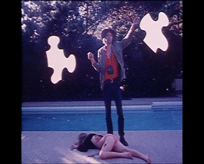

Presentations: Katherine Kerrigan

Using a quasi-documentary style, filmmaker Jon Jost employs various narrative and structural devices to mount a critique of American culture. Marked by long takes, Jost’s films are both formal and political, improvised yet carefully planned. For my presentation, I propose to examine the two films Jost made while living in Los Angeles in the mid- to late-1970s, Angel City (1976) and Chameleon (1978). Jost appropriated the conventions of Hollywood film noir for both Angel City, a detective fiction mixed with an essay-documentary about Los Angeles, Hollywood and the film industry, and Chameleon, his scathing portrait of the Los Angeles arts scene of the late 1970s. Building on the current literature on these films, my paper will look more closely at Jost’s use of continuous long shots traversing the LA landscape that characterize both films by drawing upon theories of psychogeography.
In his 1955 essay Introduction to a Critique of Urban Geography, Guy Debord defined psychogeography as "the study of the precise laws and specific effects of the geographical environment, consciously organized or not, on the emotions and behavior of individuals."
While Debord, a founding member of the Situationist International, was writing about social alienation caused by Haussmanization and post-war urbanism in Paris, his concept of psychogeography could be applied to other environments. Los Angeles’s urban landscape has also been shaped by the demands of consumer capitalism and the military-industrial complex, yet also, and very importantly, the film industry. Using the language of Hollywood, Jost takes LA as his subject only to reveal the illusory nature and capitalist corruption of contemporary American life mediated at all times by images and the systems that produce them.
Katherine Kerrigan is a Ph.D. student in Art History and a College Doctoral Fellow at USC. Her studies focus on contemporary art and visual culture, as well as graphic design and avant-garde film. Katherine’s dissertation concerns artists’ interventions in cultural institutions during the period of 1970 to 1977, with attention to the rhetoric of political action as employed by particular artists, critics, and curators in the 1970s.
Urban Landscape and Psychogeography: Jon Jost’s Los Angeles Films
This presentation is part of the panel entitled High Concepts: Cross Sections of Art and Film, being held on Sunday November 14, 2010 11:30 am - 2:00 pm in the Eileen Norris Cinema Theatre.
Left: Angel CIty (1977) by Jon Jost
Image courtesy of the artist
